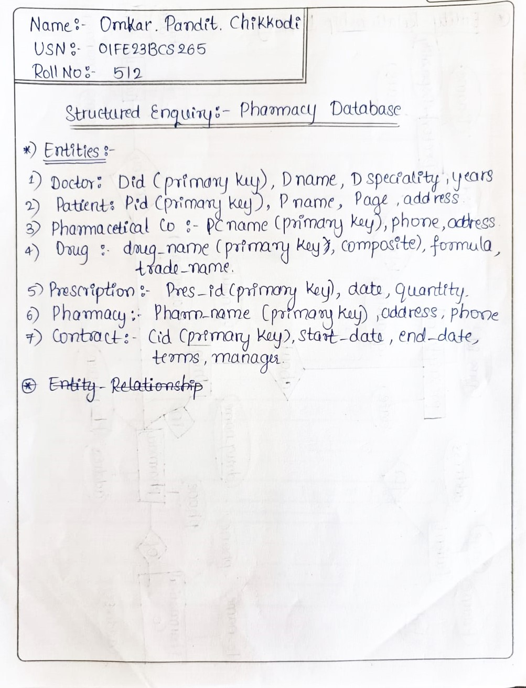

ER Model Diagrams



Description: This assignment involves designing an ER model for a pharmacy database, addressing the relationships and structural constraints among entities like Pharmaceutical Companies, Drugs, Pharmacies, Doctors, and Patients.
One of the key challenges was mapping the many-to-many relationships between Pharmacies and Pharmaceutical Companies. This was resolved by introducing a Contract entity with attributes for terms, start date, and end date.
Designing this model helped solidify concepts of entity-relationship modeling, relational schema mapping, and understanding of structural constraints and primary key selection.